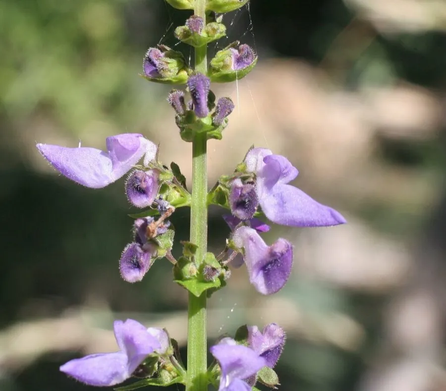

花卉与草本 · 植物界
彩叶草 Coleus scutellarioides

唇形科鞘蕊花属观叶草本，叶片色彩斑斓、花纹多变，是花坛和庭院中重要的彩叶植物，原产东南亚。
- 分类
- 门被子植物门纲木兰纲目唇形目科唇形科属鞘蕊花属
- 栖息环境
- 东南亚热带林缘与灌丛，喜温暖、湿润、阳光充足
- 地理分布
- 原产东南亚，现世界各地广泛栽培，中国各地花坛常见
- 保护级别
- 暂无评估
物种志
彩叶草为唇形科鞘蕊花属多年生草本，常作一二年生栽培，株高 30–80 厘米，茎四棱形，多分枝。叶片对生，卵形，边缘有锯齿，叶面有红、黄、紫、绿、橙等色彩和斑纹，是观赏的主要部分。轮伞花序排成顶生穗状花序，花小，蓝紫色或白色，花期 8–10 月。
彩叶草原产东南亚爪哇一带，喜温暖、阳光充足和湿润的环境，不耐寒，适合在疏松肥沃的土壤中栽培。它的叶色受光照影响明显：光照充足时颜色鲜艳，光照不足则叶色变淡、茎秆徒长。园艺品种繁多，有大型、小型、皱叶、羽叶等类型，常用于花坛镶边、庭院色块和盆栽观赏；开花会消耗养分、影响叶色，栽培中常及时摘除花穗。
形态与习性
- 株高30–80 厘米，茎四棱形
- 花期8–10 月，花小，蓝紫色
- 果期花后结小坚果
- 光照喜充足阳光，光照不足叶色变淡
- 水分喜湿润，忌积水
- 土壤疏松肥沃、排水良好的壤土
- 繁殖以扦插为主，也可播种
- 主要用途花坛镶边、庭院色块、盆栽观叶
趣味知识
- 彩叶草观赏的是叶片，叶面颜色和斑纹会随光照强弱发生变化。
- 它的花小而密集，开花会消耗养分，栽培中常摘除花穗保持叶色。
- 彩叶草扦插极易成活，剪一段茎插入水中就能生根。
- 园艺品种有皱叶、羽叶等类型，叶色从鲜红到紫黑应有尽有。